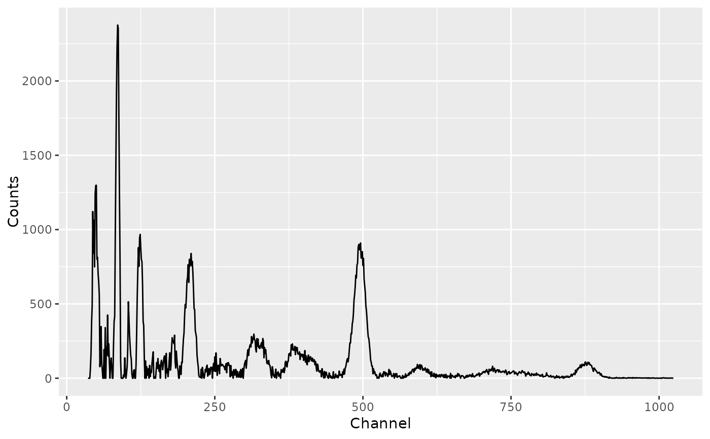
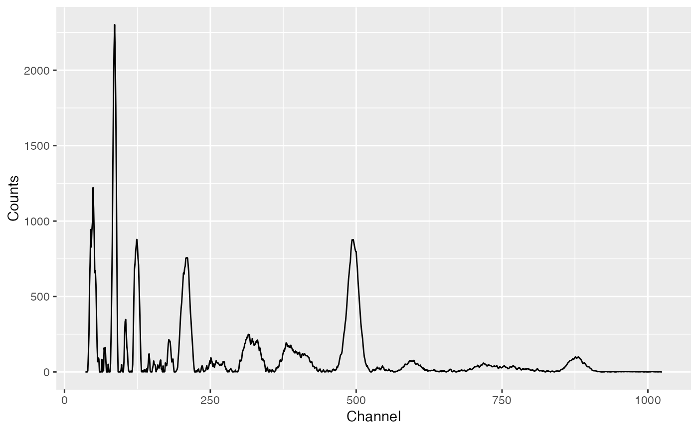
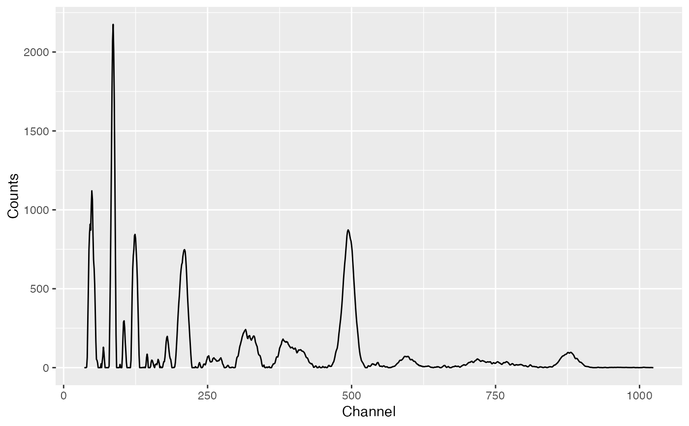
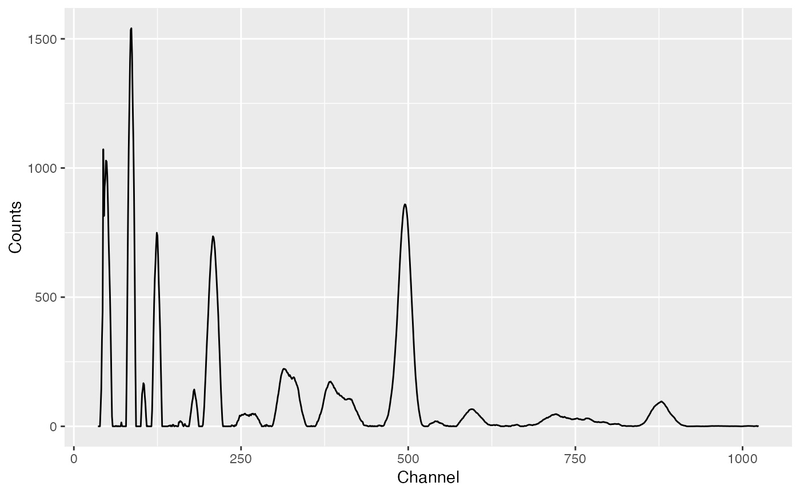

Smoothes intensities.
signal_smooth(object, ...)
smooth_rectangular(object, ...)
smooth_triangular(object, ...)
smooth_savitzky(object, ...)
# S4 method for GammaSpectrum
signal_smooth(object, method = c("rectangular", "triangular", "savitzky"), ...)
# S4 method for GammaSpectra
signal_smooth(object, method = c("rectangular", "triangular", "savitzky"), ...)
# S4 method for GammaSpectrum
smooth_rectangular(object, m = 3, ...)
# S4 method for GammaSpectra
smooth_rectangular(object, m = 3, ...)
# S4 method for GammaSpectrum
smooth_savitzky(object, m = 3, p = 2, ...)
# S4 method for GammaSpectra
smooth_savitzky(object, m = 3, p = 2, ...)
# S4 method for GammaSpectrum
smooth_triangular(object, m = 3, ...)
# S4 method for GammaSpectra
smooth_triangular(object, m = 3, ...)Arguments
- object
A GammaSpectrum or GammaSpectra object.
- ...
Extra parameters to be passed to further methods.
- method
A
characterstring specifying the smoothing method to be used. It must be one of "unweighted" (default), "weighted" or "savitzky" (see details). Any unambiguous substring can be given.- m
An odd
integergiving the number of adjacent points to be used.- p
An
integergiving the polynomial degree. Only used ifmethodis "savitzky".
Value
A GammaSpectrum or GammaSpectra object.
Details
The following smoothing methods are available:
rectangularUnweighted sliding-average or rectangular smooth. It replaces each point in the signal with the average of \(m\) adjacent points.
triangularWeighted sliding-average or triangular smooth. It replaces each point in the signal with the weighted mean of \(m\) adjacent points.
savitzkySavitzky-Golay filter. This method is based on the least-squares fitting of polynomials to segments of \(m\) adjacent points.
There will be \((m - 1) / 2\) points both at the beginning and at the end
of the spectrum for which a complete \(m\)-width smooth cannot be
calculated. To prevent data loss, progressively smaller smooths are used at
the ends of the spectrum if method is unweighted or weighted. If the
Savitzky-Golay filter is used, the original \((m - 1) / 2\) points at the
ends of the spectrum are preserved.
References
Gorry, P. A. (1990). General Least-Squares Smoothing and Differentiation by the Convolution (Savitzky-Golay) Method. Analytical Chemistry, 62(6), p. 570-573. doi: 10.1021/ac00205a007 .
Savitzky, A. & Golay, M. J. E. (1964). Smoothing and Differentiation of Data by Simplified Least Squares Procedures. Analytical Chemistry, 36(8), p. 1627-1639. doi: 10.1021/ac60214a047 .
See also
Other signal processing:
baseline,
peaks_find(),
peaks_search(),
signal_integrate(),
signal_slice(),
signal_split(),
signal_stabilize()
Author
N. Frerebeau
Examples
# Import CNF files
spc_file <- system.file("extdata/LaBr.CNF", package = "gamma")
spc <- read(spc_file)
spc <- signal_slice(spc, -c(1:35))
# Plot raw spectrum
spc_clean <- signal_correct(spc)
plot(spc_clean)

# Rectangular smooth
spc_unweighted <- smooth_rectangular(spc, m = 3)
spc_unweighted_clean <- signal_correct(spc_unweighted)
plot(spc_unweighted_clean)

# Triangular smooth
spc_weighted <- smooth_triangular(spc, m = 5)
spc_weighted_clean <- signal_correct(spc_weighted)
plot(spc_weighted_clean)

# Savitzky–Golay
spc_savitzky <- smooth_savitzky(spc, m = 21, p = 2)
spc_savitzky_clean <- signal_correct(spc_savitzky)
plot(spc_savitzky_clean)
